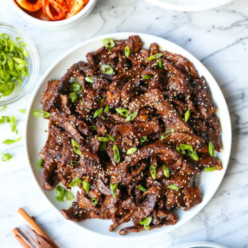

Easy Bulgogi (Korean BBQ Beef)

Description
This is a super easy way to get a Korean BBQ staple. In just 2 steps, you can enjoy Bulgogi at home.
The nutrition facts is based on the amount of the ingrediants below. Per serving: 226 calories; protein 21.4g; carbohydrates 10.9g; fat 10.2g; cholesterol 49mg; sodium 844.2mg.
Ingredients
- 3 tablespoons white sugar
- 2 tablespoons toasted sesame seeds
- 3 cloves garlic, minced
- 1 tablespoon sesame oil
- ¼ teaspoon Korean red pepper flakes
- ¼ teaspoon minced fresh ginger
- ⅛ teaspoon ground black pepper
- 1 ½ pounds beef sirloin steak, cut very thin using kitchen shears
- 1 teaspoon honey, or to taste
Steps
- Combine yellow onion, white and light green parts of green onions, soy sauce, sugar, sesame seeds, garlic, sesame oil, red pepper flakes, ginger, and black pepper in a bowl until marinade is well mixed. Add steak slices to marinade; cover and refrigerate, 1 hour to 1 day.
- Heat a skillet over medium heat. Working in batches, cook and stir steak and marinade together in the hot skillet, adding honey to caramelize the steak, until steak is cooked through, about 5 minutes. Garnish bulgogi with green parts of green onions.
- Enjoy.